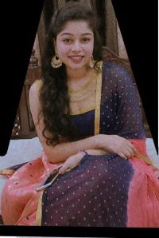

|  | Akarsha Surendra JainStudent at Walchand Institue Of Technology,Solapur I am Akarsha Jain pursuing my B.Tech. in CSE . I am interested in Technologies like android development and Logical coding .I have a edge over Java and C ,c++ . I have developed various projects like News app and Attendance app Other than this I have learned basics of Animation and I am good at Data structures. My main objective is to work and implement my Knowledge and at the same time gain knowledge from your team. Other than these technical skills I am good at taking the leadership and also becoming a good team player that contributes in a good way. |
|---|
| Year | Education |
|---|---|
| Year of completion: 2017 | Secondary (X) Saint Dominic Savio, Lalitpur (ICSE board) Percentage: 83.50% |
| Year of completion: 2019 | Senior Secondary (XII), Science Kendriya Vidhalaya, Lalitpur (((CBSE BOARD) BOARD) board) CGPA: 7.60/10 |
| 2019 - onWorking | Bachelor of Engineering (B.E), Computer Science & Engineering Walchand Institute Of Technology ( W.I.T ),Solapur |
| Skills | Level | Rating |
|---|---|---|
| Java | (Advanced) | ⭐⭐⭐⭐⭐ |
| C Programming | (Intermediate) | ⭐⭐⭐⭐ |
| Android | (Advanced) | ⭐⭐⭐⭐⭐ |
| Animation | (Beginner) | ⭐⭐⭐ |
| C++ Programming | (Intermediate) | ⭐⭐⭐⭐ |
| SQL | (Beginner) | ⭐⭐ |